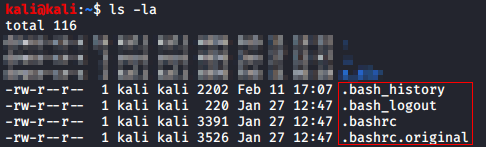
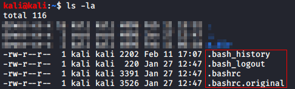

Python as Web Server:
As an example, list the directory you are in:
 

Let's start the SimpleHTTPServer on your machine:

python -m SimpleHTTPServer 8080 # Create a temporary webserver on port 8080

Now, open the IP Address of your machine (on the defined port) and you should see the files: